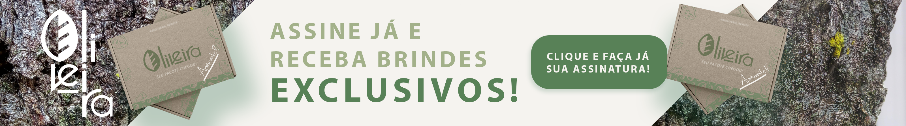

A Oliveira é uma empresa comprometida com a democratização do conhecimento científico, especialmente na área da biologia. Nosso objetivo é tornar o aprendizado acessível a todos, especialmente aos jovens brasileiros e aos entusiastas da ciência que buscam ampliar seus horizontes.
Acreditamos que a ciência deve ser compartilhada e entendida por todos, sem barreiras. Por isso, dedicamo-nos a disseminar artigos, estudos e conceitos científicos de forma clara e acessível, com uma abordagem que facilita o entendimento e desperta o interesse pela biologia.
Nosso trabalho vai além de divulgar informações: buscamos promover um ambiente de aprendizado contínuo, estimulando a curiosidade, o pensamento crítico e a inovação. A Oliveira é mais do que uma fonte de conteúdo científico; é um ponto de encontro para aqueles que desejam expandir seus conhecimentos e contribuir para o avanço da ciência.
Junte-se a nós nessa jornada de descoberta e aprendizado!
A Lantana camara é uma planta ornamental popular, conhecida por suas vibrantes flores coloridas, atraindo abelhas e borboletas e contribuindo para a biodiversidade. Além de seu apelo estético, a Lantana camara é bastante resistente e pode se adaptar a diferentes tipos de solo e condições climáticas.
Leia o artigo completoMusgos são plantas não vasculares que pertencem ao grupo dos briófitos. Musgos possuem estruturas chamadas rizoides que ajudam na fixação ao substrato. São importantes para o ecossistema, ajudando na retenção de solo e prevenção da erosão, fornecendo habitat para pequenos invertebrados.
Leia o artigo completoO dente-de-leão (Taraxacum officinale), amplamente reconhecido por suas propriedades medicinais serve como fonte de alimento para abelhas e é frequentemente encontrado em jardins, gramados e áreas rurais. Suas folhas, flores e raízes são comestíveis e têm sido usadas em saladas, chás e outros remédios tradicionais.
O cogumelo de ostra-rei (Pleurotus eryngii), também conhecido como eryngii ou cogumelo-rei, é valorizado tanto pelo seu sabor quanto pela sua textura. Este cogumelo é grande, carnudo e possui um sabor suave e levemente adocicado. É muito versátil na culinária, podendo ser grelhado, salteado, ou utilizado em sopas e ensopados. Além disso, o cogumelo de ostra-rei é rico em nutrientes e possui propriedades antioxidantes, tornando-se uma ótima adição a uma dieta saudável.
Na Oliveira, nosso time de colaboradores é o coração pulsante que impulsiona nossa missão de democratizar o conhecimento científico. Com um grupo diversificado de cientistas, educadores, e comunicadores apaixonados, estamos dedicados a tornar o aprendizado acessível e inspirador. Cada membro da nossa equipe traz uma rica bagagem de experiência e um compromisso inabalável com a excelência, garantindo que os conteúdos que oferecemos sejam precisos, envolventes e acessíveis para todos, especialmente para os jovens brasileiros e os entusiastas da ciência. Juntos, trabalhamos para ampliar os horizontes do conhecimento e fomentar uma comunidade mais informada e curiosa.